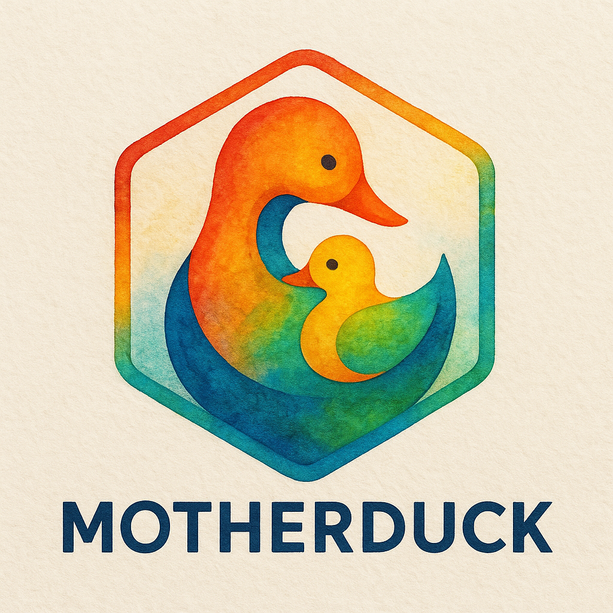

Overview
This is a collection of utilities to help with the management, administration and navigation of duckdb database either locally on your computer or in the cloud via motherduck
Database management is incredibly easy in R with fantastic packages such as DBI and dbplyr, however some databases have specific extensions or utilities that are aren’t readily accessible via this packages
{motherduck} pack simplifies these common database administration task with easy to understand syntax. {motherduck} is built upon DBI and returns a lazy DBI object so that you can further fully integrate your data with dbplyr
Future ambition
Eventually, I’ll use the learning from this package to create a meta DB utilities package so that regardless if you’re in snowflake, DuckDB, Redshift, etc you will have generalized functions that work across your database types
This is very much work in progress – I’ll eventually transition to the R7 object system but just want to get some usage first before deciding on the architecture and structure.
Please create an issue if you have any comments or requests or reach out if you have any feedback.
What do I need to use this?
- duckdb R package installed on your computer
- A motherduck account
- A motherduck access token which you you can be saved to your R environment file with
usethis::edit_r_environ()
con_md <- connect_to_motherduck("MOTHERDUCK_TOKEN")